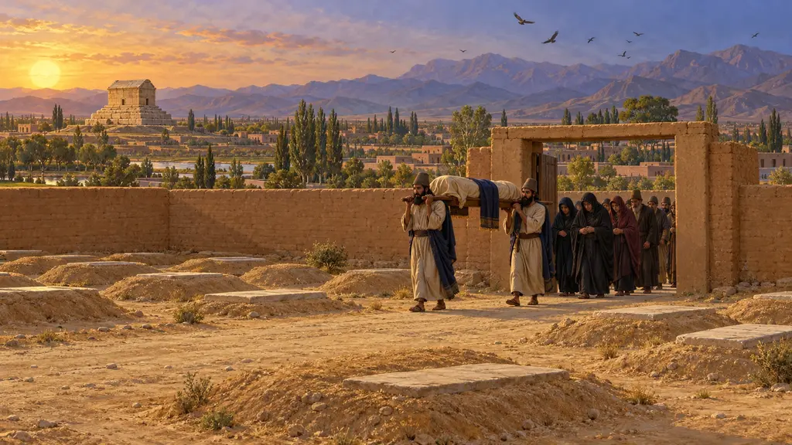
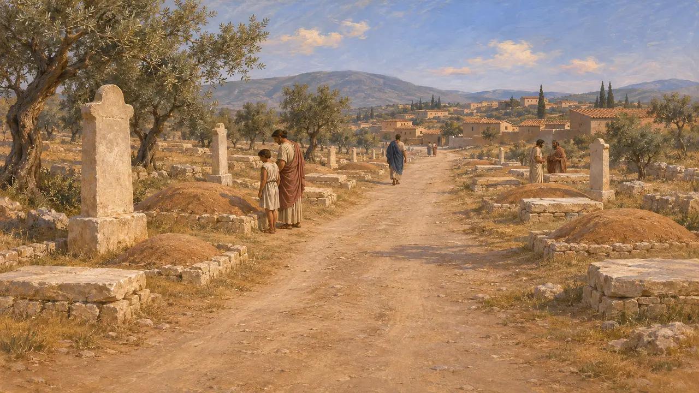
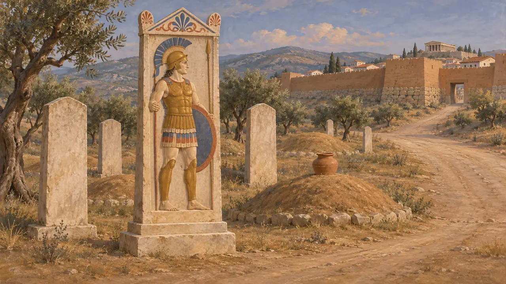
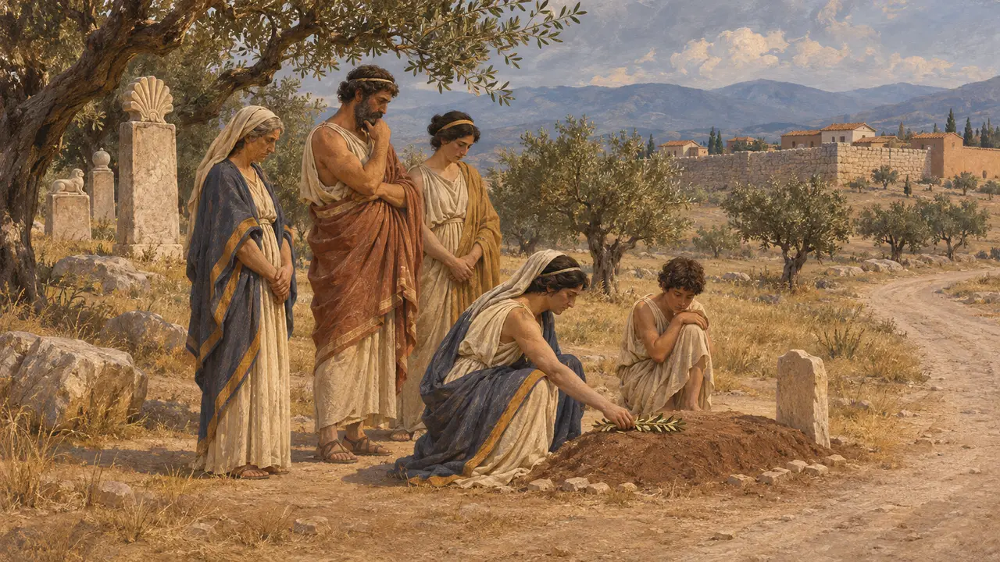
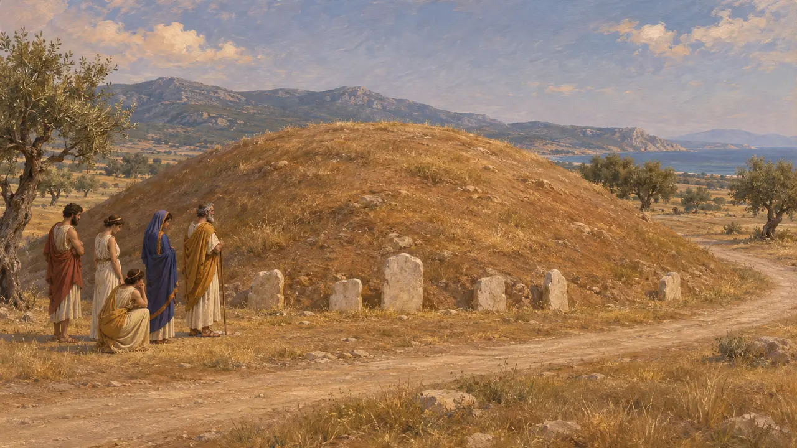
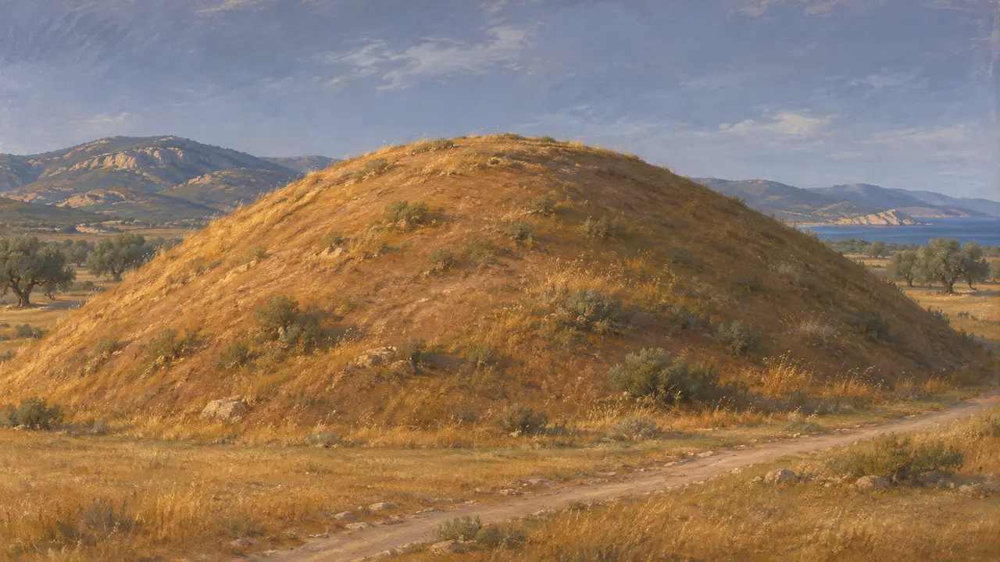
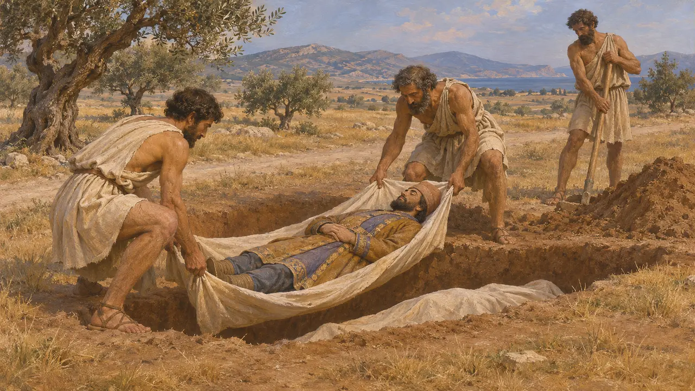
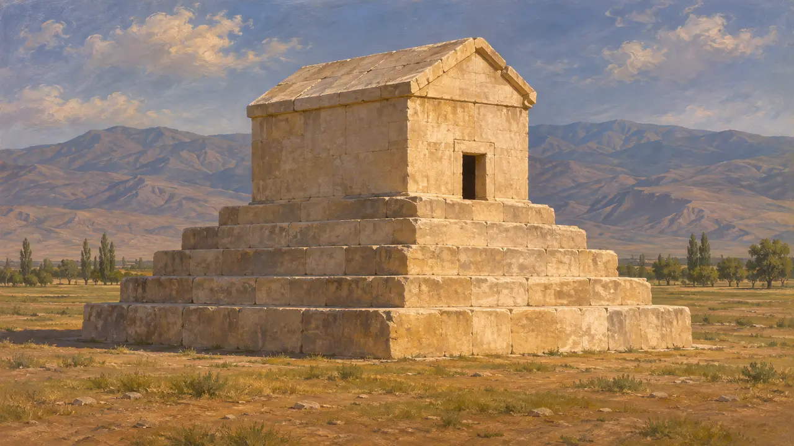

مقبرة على الطريق
مقابر يونانية على جوانب الطرق خارج أسوار المدن، أتيكا وبيوتيا، نحو 600-479 ق.م
كانت المدن اليونانية تدفن موتاها عادةً خارج العمران، على امتداد الطرق الخارجة من المدينة، فيمرّ كل داخل إليها أو خارج منها بقبور عائلاتها. وفي أثينا كانت أكبر هذه المقابر في الكيراميكوس. وأضافت الحروب مع الفرس عامَي 490 و480-479 نوعًا آخر من القبور: تلالًا رُفعت للقتلى في ساحات المعارك نفسها.
في اللعبة: تُظهر اللعبة قبورًا على جانب الطريق بشواهد وتلال، يخدمها حاملو الموتى. وقاعدتها بأن الموتى غير المدفونين يُمرضون البيوت تبسيط للتاريخ: فقد كان اليونانيون يخشون النجاسة الطقسية والعار أكثر من المرض، ودُفن كثير من قتلى المعارك في ساحة القتال.

قبور خارج البلدة
في السجلاتكشفت الحفريات في الكيراميكوس بأثينا عن قبور تصطف على جانبي الطرق الممتدة شمال غربي المدينة، استُخدمت منذ مطلع العصر الحديدي فصاعدًا. وبعد عام 479 صارت هذه الطرق تمرّ عبر بوابة ديبيلون والبوابة المقدسة في سور المدينة الجديد. ويُرجَّح أن الدفن داخل المنطقة المأهولة، بما فيها الأرض التي صارت لاحقًا الأغورا، كان قد توقف إلى حد بعيد نحو عام 700. وتُعرف مقابر على جوانب الطرق على النمط نفسه خارج كثير من المدن اليونانية الأخرى.
D. Kurtz and J. Boardman, Greek Burial Customs, 1971; I. Morris, Burial and Ancient Society, 1987

أنصاب وتماثيل وتلال
في السجلاتكانت الأسر الأتيكية الثرية في القرن السادس تُعلِّم القبور بشواهد طويلة منحوتة، أو نقوش بارزة ملوّنة للموتى، أو تماثيل كوروس رخامية. ومن الأمثلة الباقية كوروس كرويسوس من أنافيسوس، نحو 530، وشاهد أريستيون الذي وقّعه أريستوكليس، نحو 510. أما القبور الأبسط فكانت تعلوها أكوام من التراب أو ألواح غير منقوشة أو جرّة توضع فوقها. وحمل كثير من الشواهد بيتًا قصيرًا من الشعر يذكر اسم الميت.
D. Kurtz and J. Boardman, Greek Burial Customs, 1971

قوانين تحدّ من التباهي
متنازع عليهيذكر بلوتارخ أن سولون حدّ من كلفة الجنازات وضجيجها في أثينا. وينقل شيشرون قانونًا لاحقًا قيّد حجم المقابر وحظر النُّصب المتكلّفة. ويختلف المؤرخون في زمن صدور ذلك القانون اللاحق؛ فبعضهم يربطه بتراجع شواهد القبور الأتيكية الفاخرة نحو 500-480، فيما يرى آخرون أن لتبدّل الذوق أسبابًا أخرى.
Plutarch, Solon 21; Cicero, De legibus 2

قتلى معارك 490-479
رواية قديمةيذكر ثوكيديدس أن الأثينيين اعتادوا إعادة قتلاهم في الحرب إلى قبر عام في أجمل ضواحي المدينة، ويُرجَّح عادةً أنها الكيراميكوس. ويضيف أنهم دفنوا رجال ماراثون في ساحة المعركة تكريمًا لشجاعتهم. ويصف هيرودوت الشواهد والنقوش الرثائية التي أُقيمت في ثرموبيلاي، والقبور المنفصلة التي حُفرت في بلاتيا للإسبرطيين والتيغيين والأثينيين وغيرهم. وقد رأى باوسانياس لاحقًا قبر ماراثون وعليه أحجار تسرد أسماء القتلى بحسب قبائلهم.
Thucydides 2.34; Herodotus 7.228; Herodotus 9.85; Pausanias 1.32

تل ماراثون اليوم
في السجلاتالسوروس تلّ يبلغ ارتفاعه نحو 9 أمتار في سهل ماراثون. نقّب فيه فاليريوس ستايس في 1890-1891 فعثر على طبقة من الرماد والعظام المحروقة مع قوارير ليكيثوس أتيكية ذات رسوم سوداء تعود إلى نحو سنة 490. وتدعم هذه المكتشفات تحديده قبرًا لقتلى الأثينيين. ويذكر هيرودوت أن 192 أثينيًا قُتلوا مقابل 6,400 من الجانب الفارسي، ولا يزال المؤرخون يتجادلون في مدى صحة الرقم الفارسي.
V. Stais, reports on the Soros excavation; Herodotus 6.117

طرائق اليونانيين والفرس في التعامل مع الموتى
رواية قديمةيذكر هيرودوت أنه رُوي أن جثة الفارسي لا تُدفن حتى تمزّقها الطيور أو الكلاب، وهي عادة كان واثقًا من أن المجوس يتّبعونها. ويضيف أن سائر الفرس كانوا يطلون موتاهم بالشمع قبل دفنهم. أما باوسانياس فيذكر أن الأثينيين زعموا أنهم دفنوا قتلى الفرس في ماراثون في خندق، وإن لم يعثر لهم على تل.
Herodotus 1.140; Pausanias 1.32

القبور الملكية الفارسية
في السجلاتتُظهر الآثار الفارسية نفسها أن الدفن كان يُمارَس في أعلى المراتب. فقورش يرقد في ضريح حجري في باسارغاد، ووُضع داريوس وخلفاؤه في مقابر منحوتة في الصخر في نقش رستم. وتتوافق هذه الشواهد مع رواية هيرودوت عن الدفن بعد معالجة الجسد، وإن كانت لا تُنبئنا بشيء عن عادات عامة الفرس.
D. Stronach, Pasargadae, 1978; P. Briant, From Cyrus to Alexander, 2002
المصادر
- Herodotus, Histories 1.140, 6.117, 7.228, 9.85
- Thucydides 2.34
- Pausanias 1.29, 1.32
- D. Kurtz and J. Boardman, Greek Burial Customs, 1971
- I. Morris, Burial and Ancient Society, 1987
- Plutarch, Solon 21; Cicero, De legibus 2